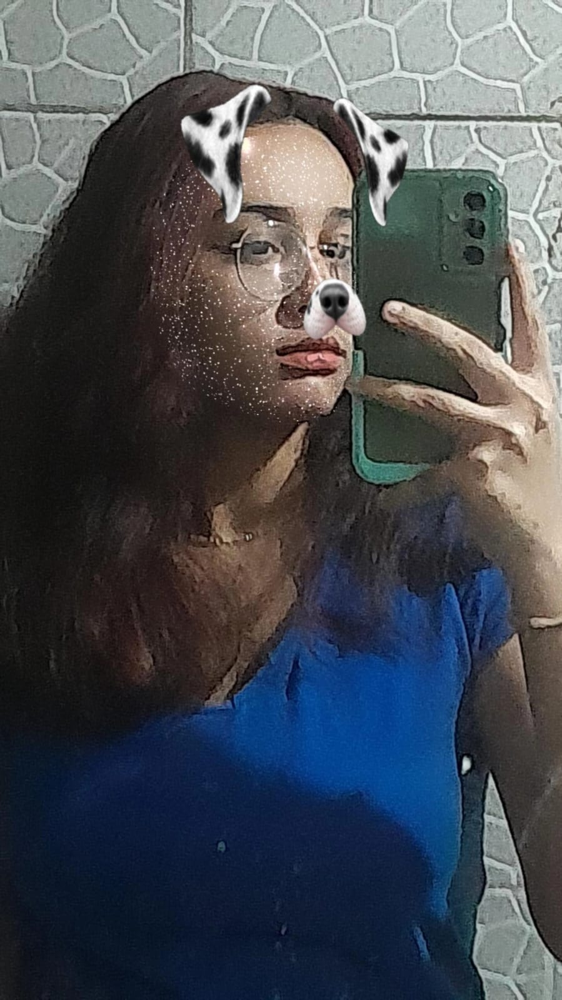
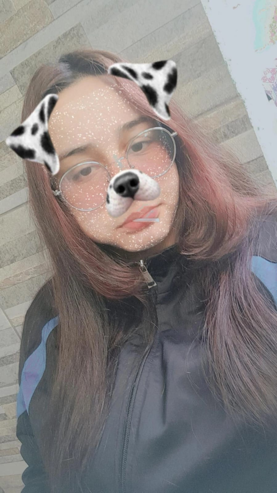
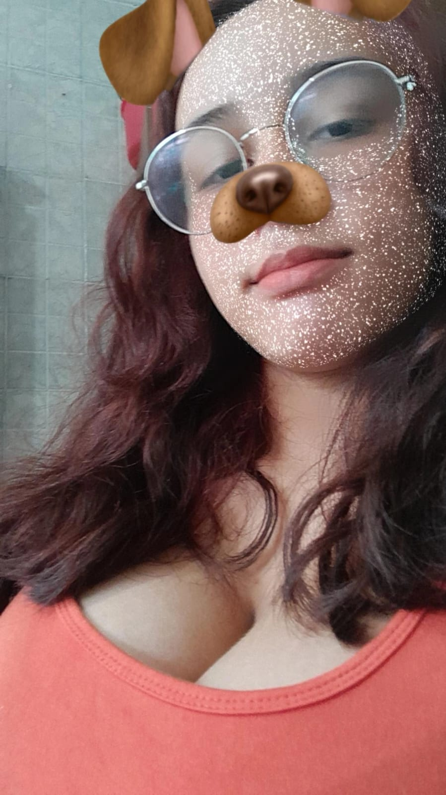
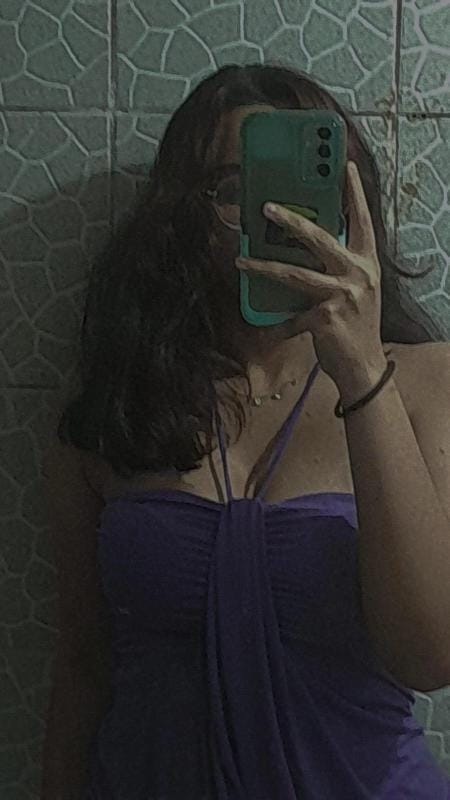
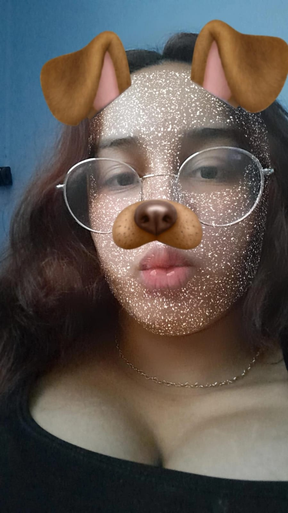
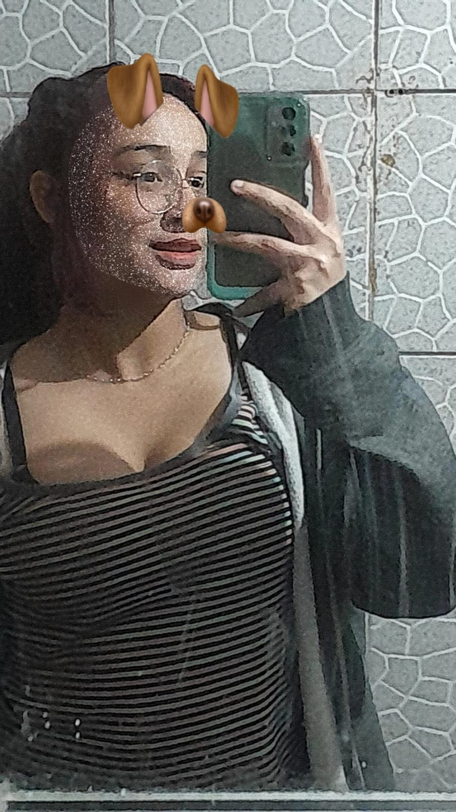
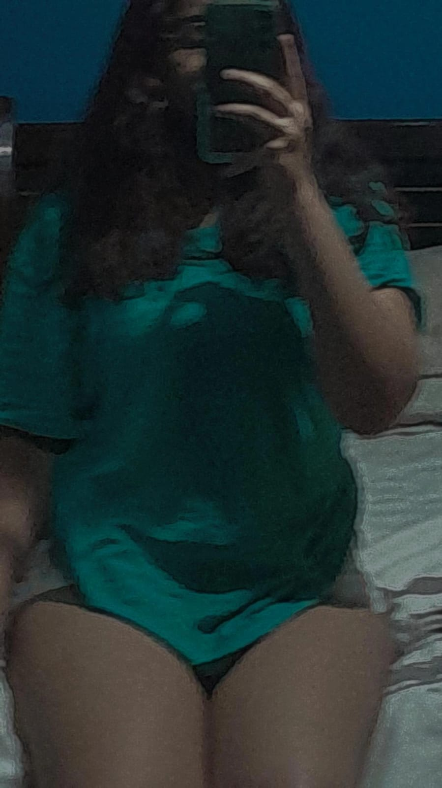
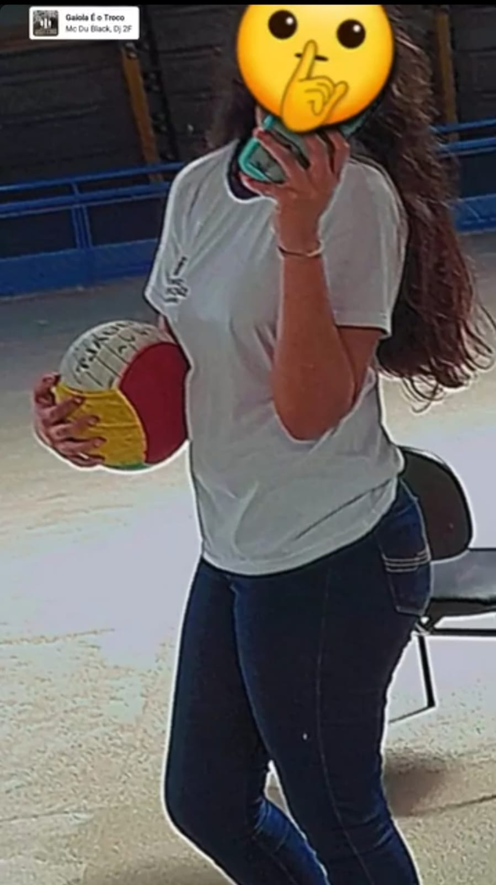
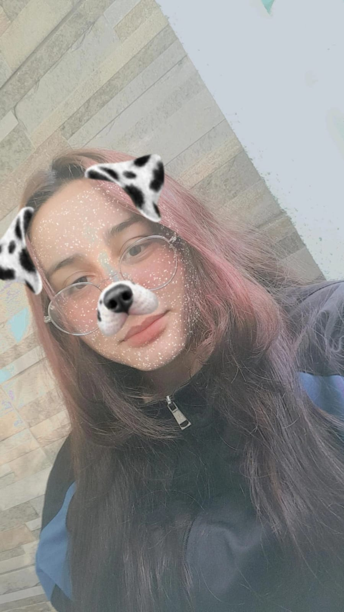
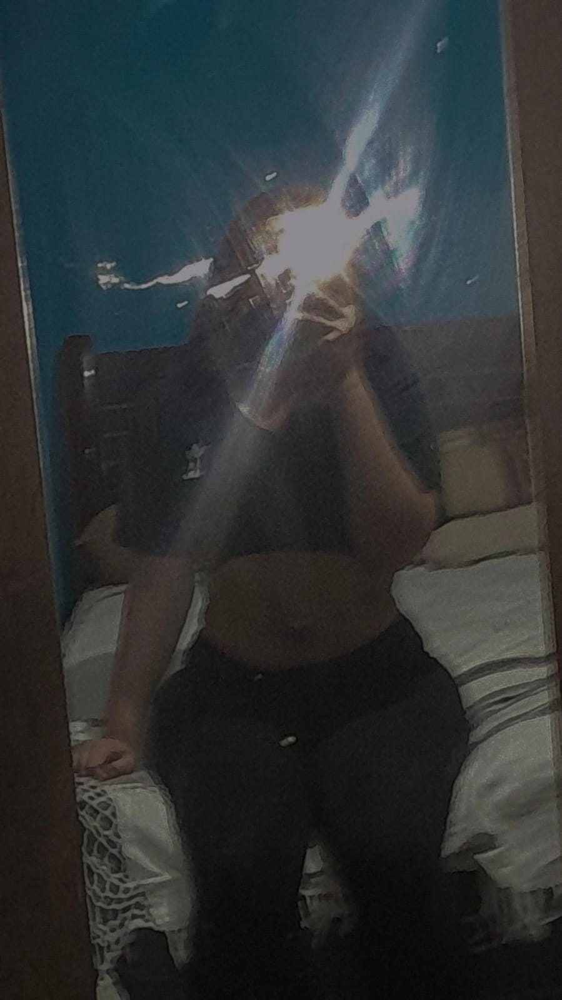

❤️Eu te amo há:











Viviane, obrigado por estar na minha vida.
Talvez, pra você, isso tudo não pareça muito, ou não pareça algo tão grandioso... mas, pra mim, você é imensamente importante. Isso aqui é só uma pequena demonstração do quanto eu te amo — e, sinceramente, nem sei explicar o tamanho desse amor.
Se eu pudesse, te daria o mundo, as estrelas... mas nem isso seria suficiente pra expressar o que eu sinto. Porque o que eu sinto por você vai além de qualquer coisa.
Desde que você apareceu, minha vida ficou mais leve, mais feliz. Eu não consigo imaginar como seria sem você aqui. Provavelmente eu estaria completamente perdido.
Obrigado por ser minha garotinha, minha paz, meu amor.
De todo o meu coração: EU TE AMO — e sempre vou te amar.
Eu mal posso esperar pelo dia em que vou te abraçar, te beijar, e poder ficar ao seu lado, pra sempre.
Você é meu presentinho do céu, feito sob medida pra mim. Assim como eu sou todo seu, feito só pra você.
Agradeço a Deus todos os dias por ter você comigo. 💖